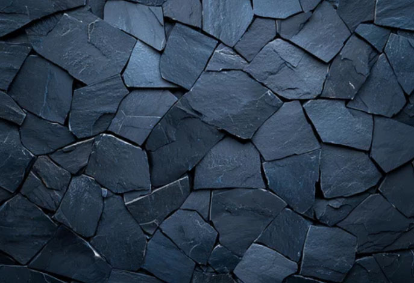
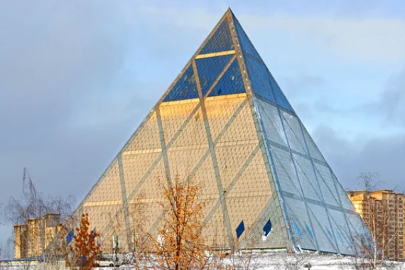
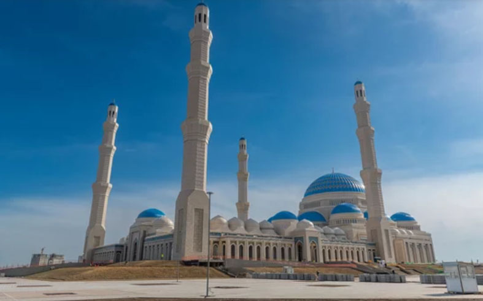
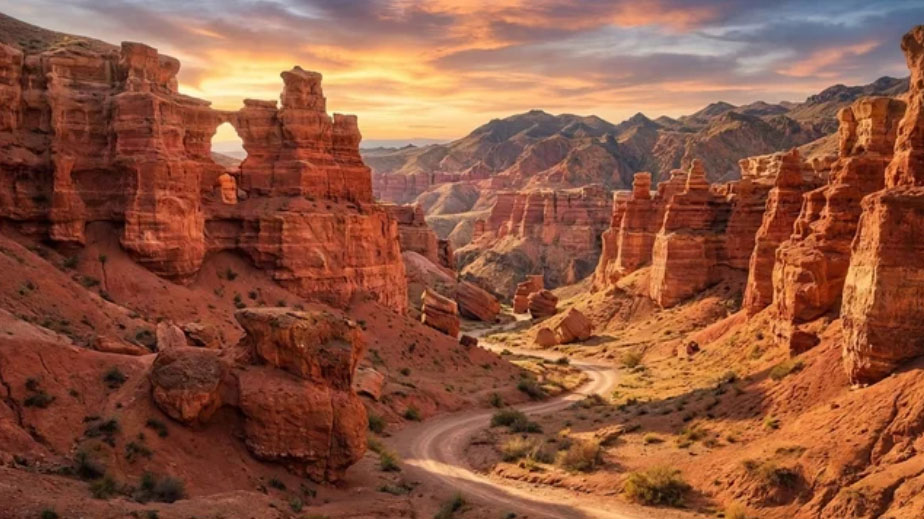
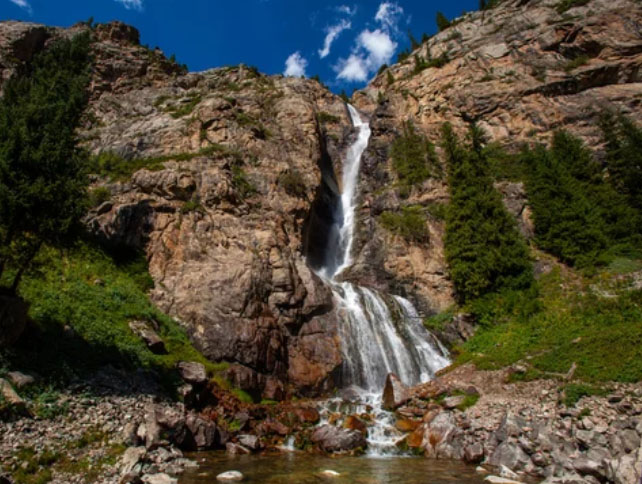
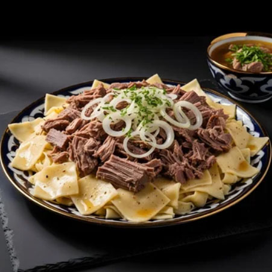
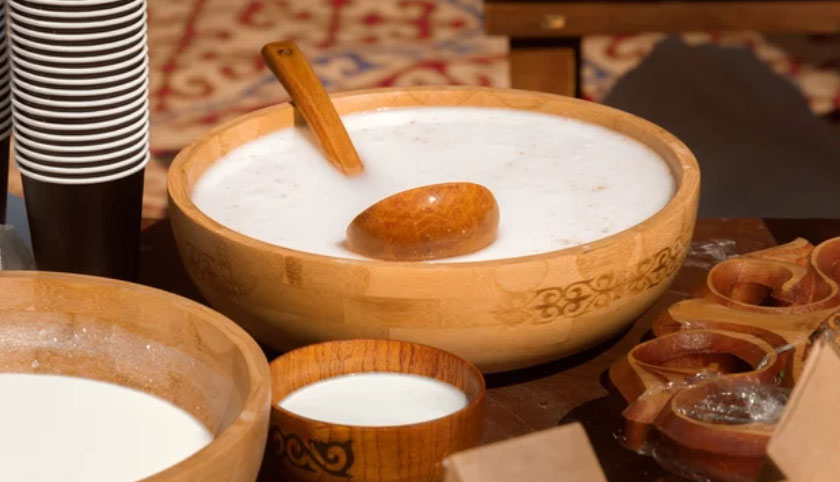
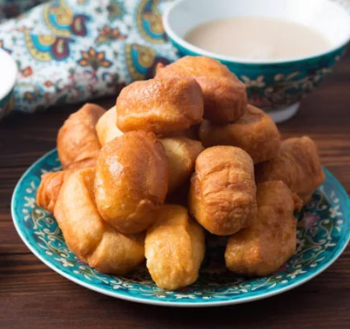

The Heart of the Great Steppe
Kazakhstan: Where the Silk Road Meets the Endless Sky
From the ancient trade routes of the Silk Road to the futuristic skyline of Astana, discover a land of boundless steppes, soaring eagles, and nomadic traditions that still shape the spirit of Central Asia.
Silk Road Splendors & Timeless Cities
Iconic Landmarks
From the turquoise domes of Samarkand to the ancient desert citadels of Khiva, discover architectural treasures where Silk Road heritage and timeless craftsmanship still shape the soul of Central Asia.

Palace of Peace and Reconciliation
A Pyramid of Harmony and Global Unity, where cultures, religions, and ideas converge beneath a striking architectural vision that reflects Kazakhstan’s commitment to dialogue, peace, and a shared future.

Astana Grand Mosque
A breathtaking symbol of faith rising across the vast степpe, where intricate design, soaring domes, and serene interiors create a spiritual sanctuary that embodies both tradition and modern grandeur.

Charyn Canyon
A dramatic landscape carved over millions of years, where towering red rock formations and silent valleys evoke a sense of timeless wonder, often compared to the grandeur of the world’s greatest canyons.

Burhan-Bulak Falls
Hidden deep within untouched mountain wilderness, this cascading waterfall offers a powerful yet tranquil escape, where the sound of rushing water and pristine nature create an unforgettable sense of isolation and awe.
A Feast of the Endless Steppe
Traditions Seasoned by Nomadic Life

Beshbarmak
The Heart of Nomadic Feasting, where tender boiled meat and wide noodles are shared by hand, reflecting centuries of hospitality and life across the endless степpe.

Kumis
A Fermented Taste of the Steppe, this slightly sour, lightly sparkling drink carries the spirit of nomadic heritage in every sip.

Baursak
Golden Bites of Comfort, these soft fried dough pieces are a symbol of celebration, often shared with tea and warm conversation.
カザフスタン共和国の歴史
A Silk Road Legacy Woven in Blue and Gold
Where Empires Rose Along the Silk Road, leaving behind magnificent cities that reflect centuries of trade, culture, and intellectual exchange.
古代
スキタイ人（紀元前8世紀 - 紀元前3世紀）
カザフスタンの草原地帯に住んでいた遊牧民で、金細工や騎馬文化が特徴。
アケメネス朝ペルシア（紀元前6世紀 - 紀元前330年）
南部地域を支配し、ゾロアスター教が広まる。
マケドニア王国（紀元前330年 - 紀元前323年）
アレクサンドロス大王が征服し、ギリシャ文化を導入。
セレウコス朝（紀元前312年 - 紀元前250年頃）
ギリシャ文化が広がり、東西交易が活発化。
中世
突厥帝国 （6世紀 - 8世紀）
テュルク系遊牧民が支配し、草原地帯で勢力を拡大。
カラハン朝（840年 - 1212年）
トルコ系イスラム王朝で、イスラム教が広まる。
モンゴル帝国（13世紀）
チンギス・ハーンの侵攻により、カザフスタン全域が征服される。
近世
カザフ・ハン国 （1465年 - 1847年）
15世紀半ば、アブル＝ハイル・ハンが支配する「ウズベク・ハン国」から、一部の集団が離脱したことが「カザフ」の始まりです。カザフ民族の形成と独自の遊牧文化が発展。 「離脱した側」がこれほど大きな土地を持てたのは、彼らが「定住せず、どこまでも続く草原を生活圏とするグループ」だったことが最大の理由と言えます。
近現代・現代
ロシア帝国 （19世紀後半 - 1917年）
カザフ草原を支配し、遊牧民の定住化を進める。ロシア移民の増加により、伝統的な生活が変化。
ロシア帝国は、カザフの遊牧民が活動していた広大な北方の草原地帯を一つの行政区画（カザフ領）として管理しました。この時の境界線が、後のソ連時代の「カザフ・ソビエト社会主義共和国」に引き継がれました。
ソビエト連邦（1920年 - 1991年）
1920年：「キルギス自治ソビエト社会主義共和国」として設立。
1925年：「カザフ自治ソビエト社会主義共和国 (ASSR)」と改名
1936年：「カザフ・ソビエト社会主義共和国 (SSR)」に改称。※ソ連直属の構成共和国へ昇格
集団農場（コルホーズ）政策により、遊牧生活が破壊され、大飢饉が発生。
カザフ大飢饉（アシャクシャラク）: 1931年から1933年にかけて、家畜の激減と不適切な穀物徴収により猛烈な飢饉が発生しました。これにより、カザフ人の人口の約3分の1（150万人以上）が餓死したと推定されています。 ロシア人などの入植が大量に進み、1959年にはカザフ人の割合が約30%まで低下。
第二次世界大戦中、工業化が進む。
カザフスタン共和国 （1991年 - 現在）
1991年：ソビエト連邦の崩壊に伴い独立を宣言。石油や天然ガスなどの資源を活用し、経済成長を遂げる。
1991年の独立後は、ロシア人の帰国やカザフ人の帰還・出生率の上昇により、再びカザフ人が多数派（約70%）に戻っています。
首都をアルマトイからアスタナ（現在のヌルスルタン）に遷都。
呼称のねじれ（1920年〜1925年）
1920年代半ばまで、ロシア側は現在のカザフ人を「キルギス人」、現在のキルギス人を「カラ・キルギス人」と呼んでいました。そのため、名称が実態と逆転していました。 旧キルギスASSR (1920-1925): 実体はカザフ人のための共和国です。1925年に「カザフASSR」へと改称されました。
ソ連時代の境界策定
1920年代の中央アジアの国境画定（民族境界画定）において、カザフ人が住む広大な草原地帯がそのままカザフスタンの領土として設定されました。
カザフスタンは、遊牧民文化、シルクロードの交易、そして近代化の波を受けながら、独自の歴史を築いてきました。多民族国家で、カザフ人以外にロシア人やウズベク人が約2割以上を占めます。